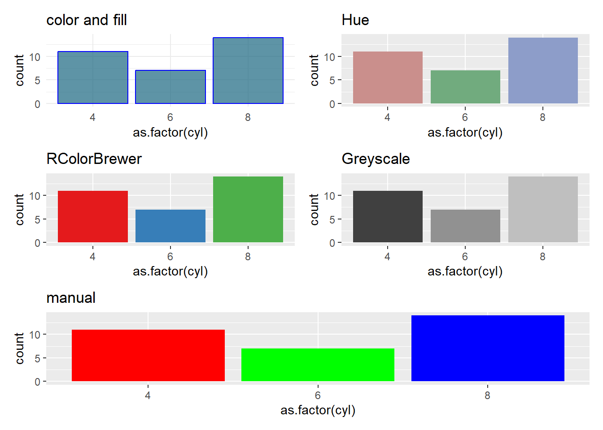
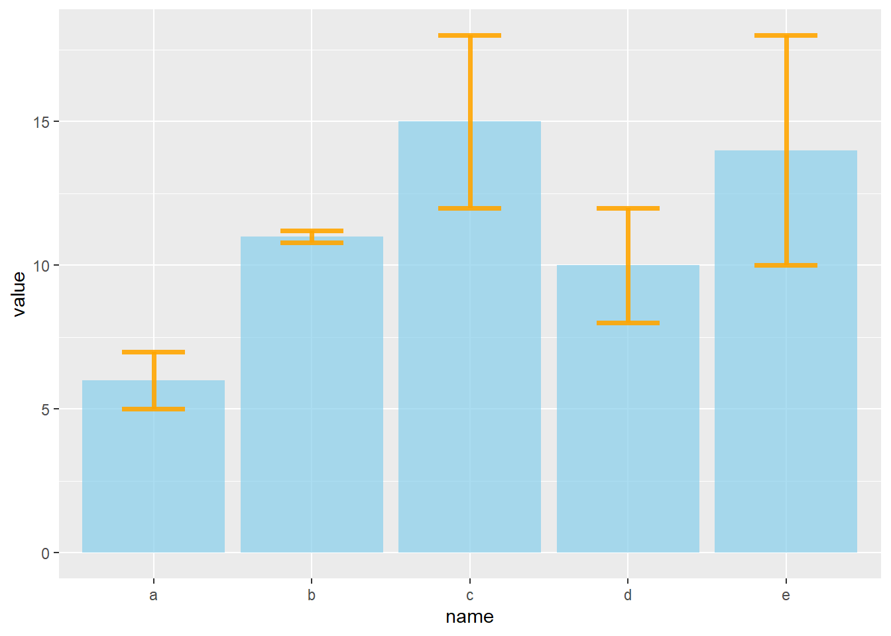
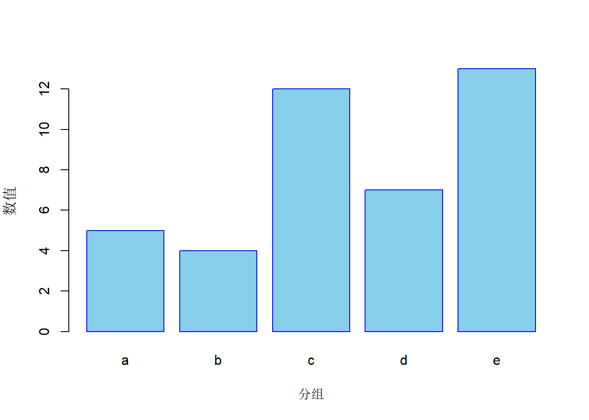
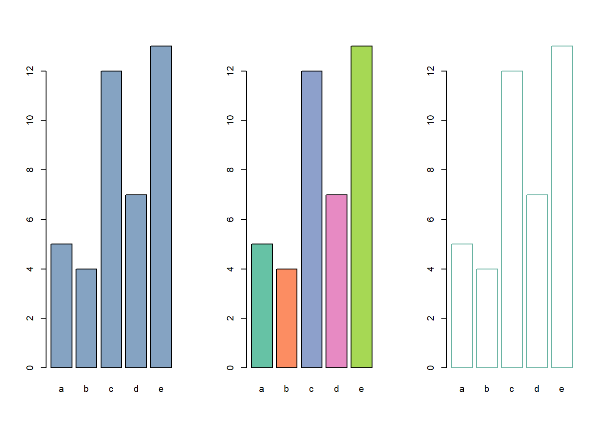
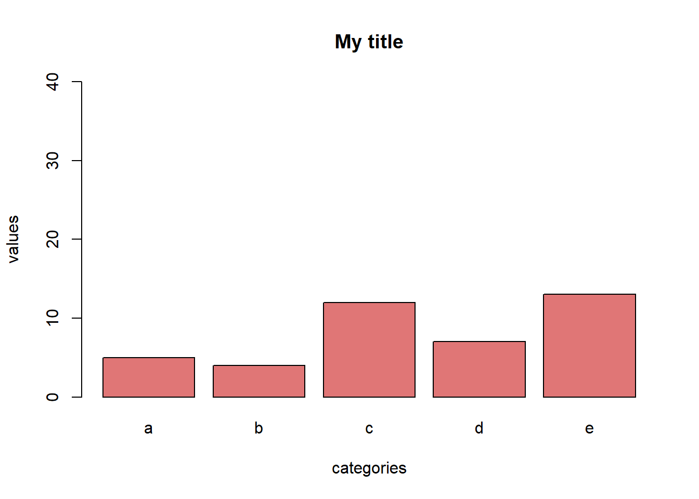
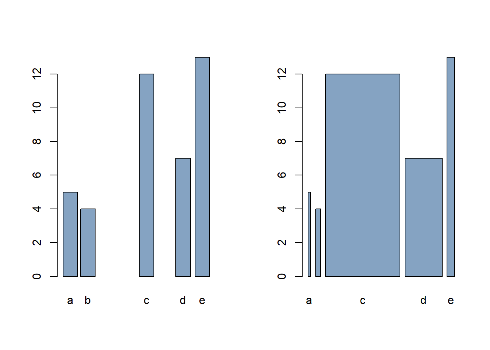
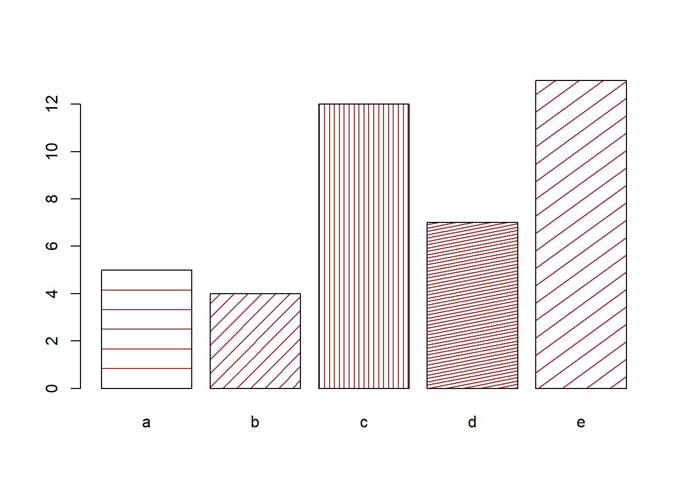
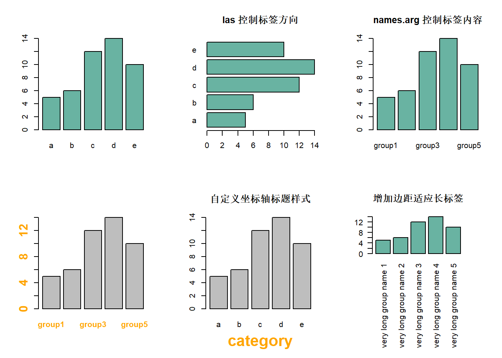
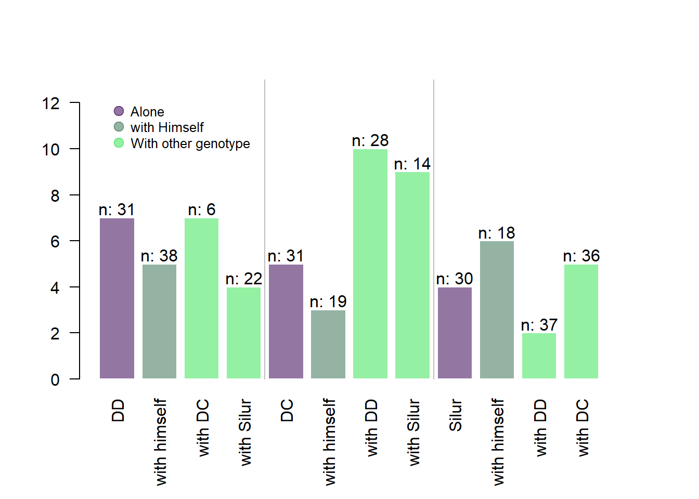
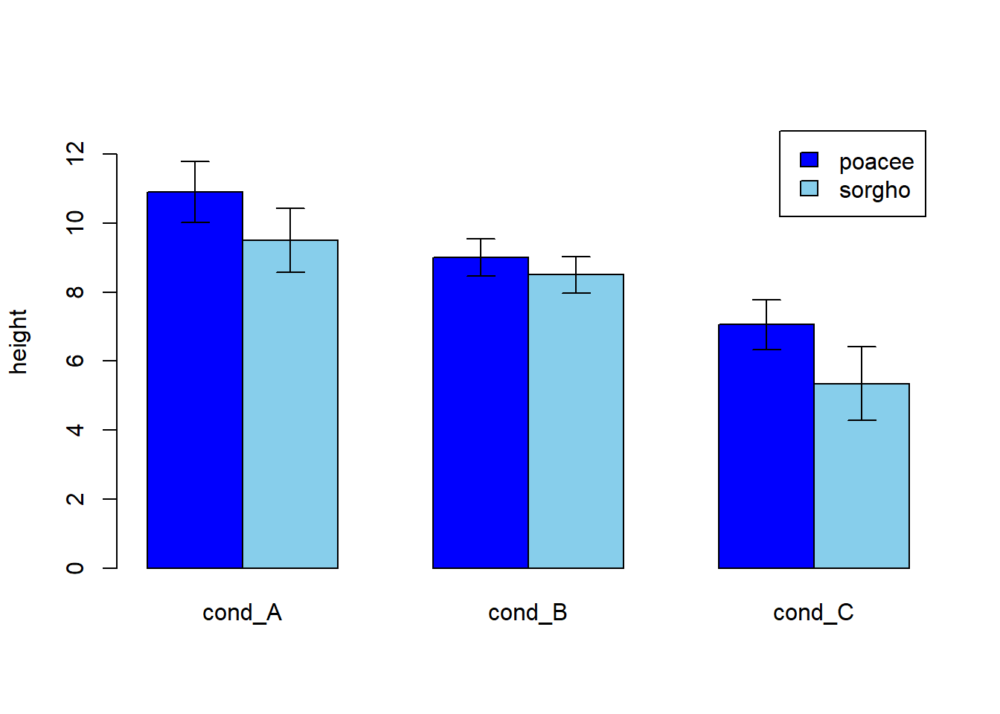

Show/Hide Code
library(tidyverse)
library(patchwork) # 拼图
library(ggpattern) # 条形图填充图案
library(hrbrthemes) # 主题
library(RColorBrewer) # 调色板GO GO GO! 出发咯! 简答实用的条形图~
library(tidyverse)
library(patchwork) # 拼图
library(ggpattern) # 条形图填充图案
library(hrbrthemes) # 主题
library(RColorBrewer) # 调色板ggplot2()# 创建数据框，包含名称和对应的数值
data <- data.frame(
name = c("A", "B", "C", "D", "E"),
value = c(3, 12, 5, 18, 45)
)
# 绘制条形图
ggplot(data, aes(x = name, y = value)) +
geom_bar(stat = "identity") # stat="identity" 表示y轴直接使用数据中的value数值
# 1: 统一颜色。color 设置边框颜色，fill 设置填充色
p1 <- ggplot(mtcars, aes(x = as.factor(cyl))) +
geom_bar(color = "blue", fill = rgb(0.1, 0.4, 0.5, 0.7)) +
ggtitle("color and fill") +
theme_minimal()
# 2: 使用色相（Hue）区分
p2 <- ggplot(mtcars, aes(x = as.factor(cyl), fill = as.factor(cyl))) +
geom_bar() +
scale_fill_hue(c = 40) +
theme(legend.position = "none", minimal = TRUE) +
ggtitle("Hue")
# 3: 使用 RColorBrewer 调色板
p3 <- ggplot(mtcars, aes(x = as.factor(cyl), fill = as.factor(cyl))) +
geom_bar() +
scale_fill_brewer(palette = "Set1") +
theme(legend.position = "none", minimal = TRUE) +
ggtitle("RColorBrewer")
# 4: 使用灰度（Greyscale）填充
p4 <- ggplot(mtcars, aes(x = as.factor(cyl), fill = as.factor(cyl))) +
geom_bar() +
scale_fill_grey(start = 0.25, end = 0.75) +
theme(legend.position = "none", minimal = TRUE) +
ggtitle("Greyscale")
# 5: 手动设置颜色
p5 <- ggplot(mtcars, aes(x = as.factor(cyl), fill = as.factor(cyl))) +
geom_bar() +
scale_fill_manual(values = c("red", "green", "blue")) +
theme(legend.position = "none", minimal = TRUE) +
ggtitle("manual")
# 使用 patchwork 拼图
(p1 + p2) / (p3 + p4) / p5 
横向条形图, 旧时代用 coord_flip()，新世纪用 直接交换 x 轴和 y 轴。
# 创建数据框，包含名称和对应的数值
data <- data.frame(
name = c("A", "B", "C", "D", "E"),
value = c(3, 12, 5, 18, 45)
)
# 绘制横向条形图
ggplot(data, aes(y = name, x= value)) +
geom_bar(stat = "identity") # stat="identity" 表示y轴直接使用数据中的value数值 效果等于 geom_col()binsggplot(data, aes(x = name, y = value)) +
geom_bar(stat = "identity", width = 0.2)
排序有多种方法: forcats::fct_reorder(), dplyr::arrange() base R::reorder()等,我一般用forcats::fct_reorder(), 另外两种方法见 Reorder a variable with ggplot2。
ggplot(
data,
aes(x = fct_reorder(name, -value), y = value, width = value / 100)
) +
geom_bar(stat = "identity")geom_errorbar() 用于添加误差棒:
# 创建包含均值和标准差的数据框
data <- data.frame(
name = letters[1:5], # 分组名称
value = sample(seq(4, 15), 5), # 每组的数值
sd = c(1, 0.2, 3, 2, 4) # 每组的标准差
)
# 绘制带误差线的条形图
ggplot(data, aes(x = name, y = value)) +
geom_bar(
stat = "identity", # 直接使用数据中的数值
fill = "skyblue", # 设置填充色
alpha = 0.7 # 设置透明度
) +
geom_errorbar(
aes(ymin = value - sd, ymax = value + sd), # 误差线范围
width = 0.4, # 误差线横向宽度
colour = "orange", # 误差线颜色
alpha = 0.9, # 误差线透明度
linewidth = 1.3 # 误差线粗细
)
还可以定制误差线的样式和颜色等:
library(tidyverse)
data <- data.frame(
name = letters[1:5],
value = sample(seq(4, 15), 5),
sd = c(1, 0.2, 3, 2, 4)
)
# 1. 矩形误差线（geom_crossbar）
p_rect <- ggplot(data) +
geom_bar(
aes(x = name, y = value),
stat = "identity",
fill = "skyblue",
alpha = 0.5
) +
geom_crossbar(
aes(x = name, y = value, ymin = value - sd, ymax = value + sd),
width = 0.4,
colour = "orange",
alpha = 0.9,
linewidth = 1.3
) +
theme_minimal()
# geom_crossbar 用矩形表示误差区间
# 2. 线段误差线（geom_linerange）
p_line <- ggplot(data) +
geom_bar(
aes(x = name, y = value),
stat = "identity",
fill = "skyblue",
alpha = 0.5
) +
geom_linerange(
aes(x = name, ymin = value - sd, ymax = value + sd),
colour = "orange",
alpha = 0.9,
linewidth = 1.3
) +
theme_minimal()
# geom_linerange 用竖线表示误差区间
# 3. 线段+点误差线（geom_pointrange）
p_point <- ggplot(data) +
geom_bar(
aes(x = name, y = value),
stat = "identity",
fill = "skyblue",
alpha = 0.5
) +
geom_pointrange(
aes(x = name, y = value, ymin = value - sd, ymax = value + sd),
colour = "orange",
alpha = 0.9,
size = 1.3
) +
theme_minimal()
# geom_pointrange 用点和线段表示误差区间
# 4. 横向条形图带误差线（coord_flip）
p_horiz <- ggplot(data) +
geom_bar(
aes(y = name, x = value),
stat = "identity",
fill = "skyblue",
alpha = 0.5
) +
geom_errorbar(
aes(y = name, xmin = value - sd, xmax = value + sd),
width = 0.4,
colour = "orange",
alpha = 0.9,
size = 1.3
) +
theme_minimal()
# coord_flip() 让条形图横向显示
# patchwork 拼图展示
(p_rect + p_line) / (p_point + p_horiz)标准差、标准误和置信区间是统计学中常用的误差类型。下面是一个示例，展示如何使用 ggplot2 绘制这三种误差类型的条形图。
# 数据准备：提取iris数据集中的Species和Sepal.Length两列
data <- iris |> select(Species, Sepal.Length)
# 计算每个物种的均值、标准差、标准误和置信区间
my_sum <- data |>
group_by(Species) |>
summarise(
n = n(), # 样本量
mean = mean(Sepal.Length), # 平均值
sd = sd(Sepal.Length) # 标准差
) |>
mutate(se = sd / sqrt(n)) |> # 标准误
mutate(ic = se * qt((1 - 0.05) / 2 + .5, n - 1)) # 置信区间（95%）
# 1. 使用标准差绘制误差线
p_sd <- ggplot(my_sum) +
geom_bar(
aes(x = Species, y = mean),
stat = "identity",
fill = "forestgreen",
alpha = 0.5
) +
geom_errorbar(
aes(x = Species, ymin = mean - sd, ymax = mean + sd), # 标准差误差线
width = 0.4,
colour = "orange",
alpha = 0.9,
size = 1.5
) +
ggtitle("Standard Deviation")
# 2. 使用标准误绘制误差线
p_se <- ggplot(my_sum) +
geom_bar(
aes(x = Species, y = mean),
stat = "identity",
fill = "forestgreen",
alpha = 0.5
) +
geom_errorbar(
aes(x = Species, ymin = mean - se, ymax = mean + se), # 标准误误差线
width = 0.4,
colour = "orange",
alpha = 0.9,
size = 1.5
) +
ggtitle("Standard Error")
# 3. 使用置信区间绘制误差线
p_ic <- ggplot(my_sum) +
geom_bar(
aes(x = Species, y = mean),
stat = "identity",
fill = "forestgreen",
alpha = 0.5
) +
geom_errorbar(
aes(x = Species, ymin = mean - ic, ymax = mean + ic), # 置信区间误差线
width = 0.4,
colour = "orange",
alpha = 0.9,
size = 1.5
) +
ggtitle("Confidence Interval")
# 使用 patchwork 拼图展示三种误差类型的条形图
p_sd + p_se + p_ic用图案等给黑白条形图加上伪色彩, 用于黑白印刷
# 创建数据框，包含名称和对应的数值
df <- data.frame(
name = c("north", "south", "south-east", "north-west", "south-west"),
val = sample(seq(7, 15), 5)
)
# 绘制黑白条形图，使用灰度填充
ggplot(df, aes(x = name, y = val, fill = name)) +
geom_bar(stat = "identity", alpha = .6, width = .4) + # 绘制条形图，设置透明度和宽度
scale_fill_grey(start = 0, end = 0.8) + # 使用灰度色阶填充，start和end控制灰度范围
theme_bw() # 使用黑白主题#| fig-cap: "使用 ggpattern 包为黑白条形图添加不同图案填充（适合黑白印刷）"
# 加载所需包
library(ggpattern)
library(ggplot2)
library(hrbrthemes)
# 使用 ggpattern 绘制带有不同图案的黑白条形图
ggplot(df, aes(x = name, y = val)) +
geom_col_pattern(
aes(
pattern = name, # 不同类别使用不同图案
pattern_angle = name, # 不同类别图案角度不同
pattern_spacing = name # 不同类别图案间距不同
),
fill = 'white', # 条形图主色为白色
colour = 'black', # 条形边框为黑色
pattern_density = 0.5, # 图案密度
pattern_fill = 'black', # 图案填充色为黑色
pattern_colour = 'darkgrey' # 图案线条颜色为深灰色
) +
theme_bw() # 使用黑白主题Base R# 构建数据框，包含5个分组及其对应的数值
data <- data.frame(
name = letters[1:5], # 分组名称（a-e）
value = sample(seq(4, 15), 5) # 每组的数值（4到15之间的随机数）
)
# 使用 barplot() 绘制基础条形图
barplot(
height = data$value, # 指定每根条形的高度
names = data$name, # 指定每根条形的名称
col = "skyblue", # 设置条形颜色
border = "blue", # 设置条形边框颜色
xlab = "分组", # x轴标签
ylab = "数值" # y轴标签
)
par(mfrow = c(1, 3)) # 1行3列
# 1. 统一颜色填充
barplot(
height = data$value, # 指定每根条形的高度
names = data$name, # 指定每根条形的名称
col = rgb(0.2, 0.4, 0.6, 0.6) # 设置所有条形为同一颜色（带透明度）
)
# 2. 为每根条形指定不同颜色（使用 RColorBrewer 调色板）
coul <- brewer.pal(5, "Set2") # 选择5种Set2调色板颜色
barplot(
height = data$value,
names = data$name,
col = coul # 每根条形使用不同颜色
)
# 3. 更改条形边框颜色
barplot(
height = data$value,
names = data$name,
border = "#69b3a2", # 设置条形边框颜色
col = "white" # 填充色为白色
)
par(mfrow = c(1, 1)) # 恢复为1行1列# 使用 barplot() 绘制条形图，并设置坐标轴标签、主标题、颜色和y轴范围
barplot(
height = data$value, # 指定每根条形的高度
names = data$name, # 指定每根条形的名称
col = rgb(0.8, 0.1, 0.1, 0.6), # 设置条形颜色（红色，带透明度）
xlab = "categories", # 设置x轴标签
ylab = "values", # 设置y轴标签
main = "My title", # 设置主标题
ylim = c(0, 40) # 设置y轴范围
)
# 使用 barplot() 绘制水平条形图
barplot(
height = data$value, # 指定每根条形的高度
names = data$name, # 指定每根条形的名称
col = "#69b3a2", # 设置条形颜色
horiz = TRUE, # 设置为水平条形图
las = 1 # y轴刻度标签水平显示
)par(mfrow = c(1, 2)) # 1行2列
# 控制条形之间的间距（space 参数）
barplot(
height = data$value, # 指定每根条形的高度
names = data$name, # 指定每根条形的名称
col = rgb(0.2, 0.4, 0.6, 0.6), # 设置条形颜色（带透明度）
space = c(0.1, 0.2, 3, 1.5, 0.3), # 设置每根条形之间的间距（可为向量）
title = "Barplot with Custom Spacing" # 设置标题
)
# 控制每根条形的宽度（width 参数）
barplot(
height = data$value, # 指定每根条形的高度
names = data$name, # 指定每根条形的名称
col = rgb(0.2, 0.4, 0.6, 0.6), # 设置条形颜色（带透明度）
width = c(0.1, 0.2, 3, 1.5, 0.3), # 设置每根条形的宽度（可为向量）
title = "Barplot with Custom Width" # 设置标题
)
par(mfrow = c(1, 1)) # 恢复为1行1列# 使用 barplot() 绘制带有不同条纹密度和角度的条形图
barplot(
height = data$value, # 指定每根条形的高度
names = data$name, # 指定每根条形的名称
density = c(5, 10, 20, 30, 7), # 设置每根条形的条纹密度（数值越大，条纹越密）
angle = c(0, 45, 90, 11, 36), # 设置每根条形的条纹角度（单位为度）
col = "brown" # 设置条形的主色为棕色
)
# 构建数据框，包含5个分组及其对应的数值
data <- data.frame(
name = letters[1:5], # 分组名称（a-e）
value = sample(seq(4, 15), 5) # 每组的数值（4到15之间的随机数）
)
par(mfrow = c(2, 3)) # 3行2列
# 基础条形图，指定条形高度、分组名称和颜色
barplot(
height = data$value, # 指定每根条形的高度
names = data$name, # 指定每根条形的名称
col = "#69b3a2" # 设置条形颜色
)
# 坐标轴标签方向使用 las 参数
barplot(
height = data$value, # 指定每根条形的高度
names = data$name, # 指定每根条形的名称
col = "#69b3a2", # 设置条形颜色
horiz = TRUE, # 设置为水平条形图
las = 1, # y轴刻度标签水平显示
main = "las 控制标签方向" # 主标题
)
# 更改组标签使用 names.arg 参数
barplot(
height = data$value, # 指定每根条形的高度
names.arg = c("group1", "group2", "group3", "group4", "group5"), # 自定义分组标签
col = "#69b3a2", # 设置条形颜色
main = "names.arg 控制标签内容" # 主标题
)
# 坐标轴标签和坐标轴标题样式设置
barplot(
height = data$value, # 指定每根条形的高度
names = data$name, # 指定每根条形的名称
names.arg = c("group1", "group2", "group3", "group4", "group5"), # 自定义分组标签
font.axis = 2, # 坐标轴刻度字体加粗
col.axis = "orange", # 坐标轴刻度颜色
cex.axis = 1.5 # 坐标轴刻度字体大小
)
# 自定义坐标轴标题样式
barplot(
height = data$value, # 指定每根条形的高度
names = data$name, # 指定每根条形的名称
xlab = "category", # x轴标题
font.lab = 2, # 坐标轴标题字体加粗
col.lab = "orange", # 坐标轴标题颜色
cex.lab = 2, # 坐标轴标题字体大小
main = "自定义坐标轴标题样式"
)
# 增加边距大小，适应长标签
par(mar = c(11, 4, 4, 4)) # 设置下边距为11，其余为默认
barplot(
height = data$value, # 指定每根条形的高度
col = "#69b3a2", # 设置条形颜色
names.arg = c(
"very long group name 1",
"very long group name 2",
"very long group name 3",
"very long group name 4",
"very long group name 5"
), # 长标签
las = 2, # 标签竖直显示
main = "增加边距适应长标签"
)
# 恢复默认边距和布局
par(mar = c(0, 0, 0, 0))
par(mfrow = c(1, 1)) # 1行1列n# 构建数据框，包含名称、平均值和样本量
data <- data.frame(
name = c(
"DD",
"with himself",
"with DC",
"with Silur",
"DC",
"with himself",
"with DD",
"with Silur",
"Silur",
"with himself",
"with DD",
"with DC"
),
average = sample(seq(1, 10), 12, replace = TRUE), # 平均值（1~10之间的随机数）
number = sample(seq(4, 39), 12, replace = TRUE) # 样本量（4~39之间的随机数）
)
# 增加底部边距，防止标签重叠
par(mar = c(6, 4, 4, 4))
# 绘制基础条形图
my_bar <- barplot(
data$average, # 条形高度为平均值
border = FALSE, # 不显示条形边框
names.arg = data$name, # 条形名称
las = 2, # x轴标签竖直显示
col = c(
rgb(0.3, 0.1, 0.4, 0.6), # 不同分组的颜色
rgb(0.3, 0.5, 0.4, 0.6),
rgb(0.3, 0.9, 0.4, 0.6),
rgb(0.3, 0.9, 0.4, 0.6)
),
ylim = c(0, 13), # y轴范围
main = "" # 主标题为空
)
# 添加竖直分隔线，辅助分组视觉
abline(v = c(4.9, 9.7), col = "grey")
# 在每根条形上方添加样本量文本
text(
my_bar, data$average + 0.4, # 位置：条形顶端稍上方
paste("n: ", data$number, sep = ""), # 显示样本量
cex = 1 # 字体大小
)
# 添加图例，说明不同颜色代表的分组
legend(
"topleft", # 图例位置
legend = c("Alone", "with Himself", "With other genotype"), # 图例标签
col = c(
rgb(0.3, 0.1, 0.4, 0.6),
rgb(0.3, 0.5, 0.4, 0.6),
rgb(0.3, 0.9, 0.4, 0.6),
rgb(0.3, 0.9, 0.4, 0.6)
),
bty = "n", # 不显示图例边框
pch = 20, # 图例点形状
pt.cex = 2, # 图例点大小
cex = 0.8, # 图例字体大小
horiz = FALSE, # 图例竖直排列
inset = c(0.05, 0.05) # 图例内边距
)
依赖 arrows() 函数来添加误差线, 比较复杂
# 构建数据集：3种环境条件（A、B、C）下，2种植物（sorgho和poacee）各10个样本的高度
data <- data.frame(
specie = c(rep("sorgho", 10), rep("poacee", 10)),
cond_A = rnorm(20, 10, 4),
cond_B = rnorm(20, 8, 3),
cond_C = rnorm(20, 5, 4)
)
# 计算每种植物、每种条件下的平均值
bilan <- aggregate(cbind(cond_A, cond_B, cond_C) ~ specie, data = data, mean)
rownames(bilan) <- bilan[, 1] # 设置行名为植物名称
bilan <- as.matrix(bilan[, -1]) # 转为矩阵，去掉第一列（植物名称）
# 设置y轴上限，留出空间显示误差线
lim <- 1.2 * max(bilan)
# 定义一个函数，用于在图上添加误差线（arrows函数实现）
error.bar <- function(x, y, upper, lower = upper, length = 0.1, ...) {
arrows(x, y + upper, x, y - lower, angle = 90, code = 3, length = length, ...)
}
# 计算每种植物、每种条件下的标准差，并换算为置信区间（1.96倍标准差/样本量）
stdev <- aggregate(cbind(cond_A, cond_B, cond_C) ~ specie, data = data, sd)
rownames(stdev) <- stdev[, 1]
stdev <- as.matrix(stdev[, -1]) * 1.96 / 10
# 绘制分组条形图
ze_barplot <- barplot(
bilan,
beside = TRUE, # 分组显示
legend.text = TRUE, # 显示图例
col = c("blue", "skyblue"), # 设置颜色
ylim = c(0, lim), # 设置y轴范围
ylab = "height" # y轴标签
)
# 添加误差线
error.bar(ze_barplot, bilan, stdev)
Section 7.5 有示例